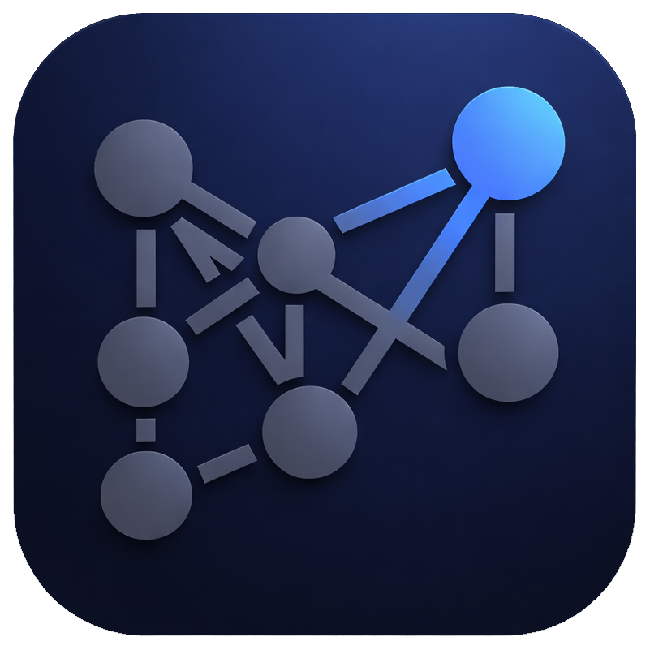

Markdown notes, everywhere.
A powerful, open-source note-taking app built for writers, developers, and anyone who thinks in plain text.
Available on desktop (Windows, macOS, Linux) and mobile (Android, iOS).
Note: The mobile app is a work in progress. All features ship to desktop first.
Website · Docs · Google Play · App Store · Features · Getting Started · Desktop · Mobile · Community · Structure · Contributing
Most note apps lock you into their cloud, their format, or their platform. Glyph is different:
Writing
|
Markdown Support
|
Linking & Discovery
|
Organization
|
Content Tools
|
Media & Attachments
|
Sync
|
Board ViewTurn any note into a drag-and-drop task board. Create
|
Calendar ViewVisual month calendar that surfaces your daily notes and tasks with due dates.
|
MCP ServerConnect any MCP-compatible AI assistant (Claude, Cursor, etc.) directly to your Glyph vault with full read/write access.
Or install from npm: |
Live CollaborationReal-time co-editing using Yjs CRDT over WebRTC — peer-to-peer, no server required.
|
Publish as HTMLExport notes as beautiful standalone web pages using your current theme.
|
Web ClipperBrowser extension to save articles and selections as markdown notes directly into your vault.
|
|
Themes10 built-in themes with full dark and light mode support:
|
EcosystemPlugins
CSS Snippets
|
| Setting | Options |
|---|---|
| Auto-save interval | Off, 10s, 30s, 1 min, 5 min (sync auto every 5s) |
| Font size | 12px – 24px |
| Line height | 1.2 – 2.0 |
| Tab size | 2, 4, 8 |
| Editor font | JetBrains Mono, Fira Code, Cascadia Code, Source Code Pro, SF Mono, System Mono |
| Theme | 10 built-in + community + custom |
| Accent color | 8 options |
| Spell check | On / Off |
git clone https://github.com/thejacedev/Glyph.git
cd Glyph
Electron + Next.js — Windows, macOS, Linux
The desktop app provides the full Glyph experience with a CodeMirror-based editor, native file system access, and Git integration via the system's git binary.
cd desktop
npm install
npm run dev
This starts both the Next.js dev server (port 3456) and the Electron window simultaneously.
cd desktop
npm run build
Builds distributable packages to desktop/dist/:
| Platform | Format |
|---|---|
| Linux | AppImage, .deb, .rpm |
| macOS | .dmg |
| Windows | .exe (NSIS installer) |
desktop/
├── main/ Electron main process
│ ├── main.js App entry, IPC handlers, window management
│ ├── preload.js Context bridge (92 methods)
│ ├── store.js Persistent config (vaults, settings)
│ ├── auth.js GitHub token encryption (OS keychain)
│ ├── updater.js Auto-update via electron-updater
│ └── sync/
│ ├── git.js Git operations via child_process
│ ├── folder.js Folder sync (bidirectional, mtime-based)
│ ├── webdav.js WebDAV sync
│ ├── helpers.js Shared sync utilities
│ └── index.js Sync orchestrator
├── src/
│ ├── app/
│ │ ├── page.tsx Main app (90+ state variables)
│ │ ├── layout.tsx Next.js root layout
│ │ └── globals.css Global styles + CSS variables
│ ├── components/ 41 React components
│ │ ├── Editor.tsx CodeMirror markdown editor
│ │ ├── Sidebar.tsx File tree with drag-drop
│ │ ├── TitleBar.tsx Tabs + window controls
│ │ ├── SettingsModal.tsx 6-section settings
│ │ ├── SetupWizard.tsx First-run wizard
│ │ ├── GraphView.tsx Force-directed knowledge graph
│ │ ├── Canvas.tsx Visual whiteboard
│ │ ├── SlidePresentation.tsx Markdown presentations
│ │ ├── CommandPalette.tsx Searchable action palette
│ │ ├── ThemePicker.tsx Theme browser + installer
│ │ ├── PluginManager.tsx Plugin browser + installer
│ │ ├── CSSSnippets.tsx Snippet editor + community
│ │ ├── DrawingEditor.tsx Canvas drawing editor (pencil, shapes, arrows, text, eraser)
│ │ ├── CalendarView.tsx Month calendar with daily notes + tasks
│ │ ├── BoardView.tsx Drag-and-drop task board
│ │ ├── DataviewBlock.tsx Vault query result renderer
│ │ ├── PublishPreview.tsx HTML export preview + multi-note publish
│ │ ├── FlashcardReview.tsx Spaced repetition flashcard review
│ │ ├── CollabPanel.tsx Live collaboration session manager
│ │ ├── PDFViewer.tsx PDF viewer with annotation tools
│ │ └── markdown/ Live rendering engine
│ │ ├── plugin.ts CodeMirror ViewPlugin
│ │ ├── registry.ts Renderer registration
│ │ ├── renderers/ 15 block + inline renderers
│ │ ├── callouts.ts Obsidian-style admonitions
│ │ ├── embeds.ts Note embedding (![[file]])
│ │ ├── math.ts KaTeX rendering
│ │ ├── mermaid.ts Diagram rendering
│ │ ├── wikilinks.ts Interactive wiki-links
│ │ └── slash-commands.ts / command menu
│ ├── lib/ 33 utility modules
│ │ ├── settings.ts App settings + defaults
│ │ ├── theme-utils.ts 10 built-in themes + community
│ │ ├── plugin-api.ts Plugin sandbox + API
│ │ ├── css-snippets.ts CSS snippet system
│ │ ├── hotkeys.ts 70+ rebindable shortcuts
│ │ ├── editor-commands.ts Formatting commands
│ │ ├── wiki-link-utils.ts Link parsing + resolution
│ │ ├── tag-utils.ts Tag extraction + aggregation
│ │ ├── frontmatter-utils.ts YAML frontmatter
│ │ ├── template-utils.ts Template variables
│ │ ├── file-recovery.ts Snapshot system
│ │ ├── note-composer-utils.ts Merge + split
│ │ ├── attachment-utils.ts Media management
│ │ ├── audio-utils.ts Recording utilities
│ │ ├── canvas-utils.ts Canvas data model
│ │ ├── slide-utils.ts Presentation parser
│ │ ├── pdf-export.ts PDF export
│ │ ├── sync-providers.ts Folder + WebDAV config
│ │ ├── vim-mode.ts Vim keybindings
│ │ ├── drawing-utils.ts Drawing file create/parse/serialize/export
│ │ ├── calendar-utils.ts Calendar grid, daily note mapping, task extraction
│ │ ├── board-utils.ts Board parse/serialize, card/column CRUD
│ │ ├── dataview.ts Vault query engine (TABLE, LIST, TASK)
│ │ ├── toc-utils.ts Table of contents generation + auto-update
│ │ ├── publish.ts HTML export with theme colors
│ │ ├── flashcard-utils.ts SM-2 spaced repetition + card extraction
│ │ ├── collab.ts Yjs CRDT + WebRTC collaboration
│ │ ├── focus-mode.ts Focus/typewriter mode extension
│ │ └── pdf-annotation.ts PDF annotation types + sidecar I/O + markdown export
│ └── types/
│ └── electron.d.ts IPC type definitions (50+ methods)
└── public/ App icons (macOS, Windows, Linux)
Expo + React Native — Android, iOS
Work in progress. All features come to desktop first, then mobile.
The mobile app aims for feature parity with the desktop, adapted for touch interfaces. Notes are stored in the app's document directory and synced via the GitHub REST API.
cd phone
npm install
npx expo start
| Command | Description |
|---|---|
npx expo start |
Start Expo dev server |
npx expo start --android |
Open on Android device/emulator |
npx expo start --ios |
Open on iOS simulator |
phone/
├── app/ Screens (Expo Router, file-based routing)
│ ├── _layout.tsx Root layout + theme provider
│ ├── index.tsx Home (notes list, daily note, random note)
│ ├── editor.tsx Markdown editor + preview
│ ├── settings.tsx Settings (themes, GitHub, ecosystem)
│ ├── setup.tsx First-run wizard with GitHub auth
│ ├── templates.tsx Template picker
│ ├── recovery.tsx File recovery / snapshots
│ ├── composer.tsx Note merge + split
│ ├── attachments.tsx Attachment manager
│ ├── backlinks.tsx Backlinks viewer
│ ├── frontmatter.tsx YAML frontmatter editor
│ ├── slides.tsx Slide presentation viewer
│ ├── snippets.tsx CSS snippets (installed + community)
│ ├── plugins.tsx Plugin manager (installed + community)
│ ├── calendar.tsx Monthly calendar with daily note dots + due tasks
│ ├── flashcards.tsx SM-2 spaced repetition flashcard review
│ ├── graph.tsx Force-directed wiki-link graph (WebView canvas)
│ ├── trash.tsx Trash / soft delete with restore
│ └── publish.tsx Publish note as HTML + share sheet
├── components/
│ ├── MarkdownEditor.tsx TextInput editor + formatting toolbar
│ ├── MarkdownPreview.tsx Custom markdown renderer
│ ├── NotesList.tsx File/folder browser
│ ├── SearchModal.tsx Quick open + vault search
│ ├── CreateModal.tsx Create file/folder
│ ├── VaultSwitcher.tsx Switch/create vaults
│ ├── OutlinePanel.tsx Document outline
│ ├── BookmarksPanel.tsx Bookmarked files
│ ├── TagsPanel.tsx Hierarchical tag browser
│ └── BoardView.tsx Board view with columns + cards
├── context/
│ ├── AppContext.tsx Global state (vault, settings, files, auto-sync)
│ └── ThemeContext.tsx Dynamic theme provider
├── lib/
│ ├── file-system.ts expo-file-system class API wrapper
│ ├── vault.ts Vault CRUD + workspace
│ ├── settings.ts Settings with defaults
│ ├── storage.ts AsyncStorage wrappers
│ ├── github-sync.ts GitHub REST API sync (push/pull)
│ ├── templates.ts Template listing + variables
│ ├── frontmatter.ts YAML parse/serialize
│ ├── file-recovery.ts Snapshot system
│ ├── note-composer.ts Merge + split
│ ├── wiki-links.ts Link parsing + backlinks
│ ├── attachments.ts Attachment management
│ ├── slide-utils.ts Slide parser
│ ├── daily-note.ts Daily note helper
│ ├── random-note.ts Random note picker
│ ├── css-snippets.ts CSS snippet system
│ ├── plugins.ts Plugin management
│ ├── community.ts Community theme support
│ ├── calendar-utils.ts Month grid, task extraction
│ ├── flashcard-utils.ts SM-2 algorithm, card extraction
│ ├── markdown-lint.ts Linting rules (wiki-links, headings, code blocks)
│ ├── note-history.ts Line-based diff (LCS algorithm)
│ ├── publish.ts Markdown-to-HTML converter
│ ├── board-utils.ts Board parse/serialize, card CRUD
│ └── dataview.ts Vault query engine
├── constants/
│ └── theme.ts 10 built-in themes + accent colors
└── types/
└── index.ts TypeScript interfaces
Both apps share the same feature set with platform-appropriate adaptations:
| Feature | Desktop | Mobile |
|---|---|---|
| Editor | CodeMirror 6 | TextInput + toolbar |
| Git sync | Native git binary | GitHub REST API + fresh clone |
| File storage | Any filesystem path | App document directory |
| Themes | 10 built-in + custom creator | 10 built-in + community install |
| Plugins | Sandbox execution | Install + enable/disable |
| Navigation | Sidebar + tabs + split editor | Stack navigation + swipe between notes |
| Graph view | Force-directed canvas | Force-directed WebView canvas |
| Board view | Drag-drop columns | Horizontal scroll columns with move actions |
| Calendar | Monthly grid | Monthly grid with daily note dots |
| Flashcards | SM-2 spaced repetition | SM-2 spaced repetition |
| Canvas | SVG whiteboard | — |
| Vim mode | CodeMirror vim extension | — |
| Audio recorder | MediaRecorder API | — |
| Drawing editor | Canvas with tools | — |
| PDF viewer | Inline annotations | — |
| Keyboard shortcuts | 70+ rebindable | System defaults |
Glyph has a growing ecosystem of community-created extensions. Browse and install them directly from the app.
Pluginsthejacedev/GlyphPluginsExtend Glyph with custom commands, sidebar panels, status bar items, and editor integrations. Plugins have access to the vault filesystem, editor state, and event system. Plugin API: vault read/write, UI commands, event listeners (file-open, file-save, editor-change, etc.), editor manipulation (insert, replace, cursor) |
Themesthejacedev/GlyphThemesCommunity color themes beyond the 10 built-in options. Themes define 16 color properties covering backgrounds, text, accent, and syntax colors. Theme format: JSON with id, name, type (dark/light), and colors object. Import/export supported on desktop. |
CSS Snippetsthejacedev/GlyphSnippetsFine-tune the editor and preview with custom CSS. Snippets are stored per-vault and can be toggled individually. Community snippets are organized by category. Snippet storage: .glyph/snippets/ directory with per-snippet .css files and a config JSON for enable/disable state.
|
Plugins live in .glyph/plugins/{plugin-id}/ inside your vault. Each plugin needs:
my-plugin/
├── manifest.json Plugin metadata
└── main.js Entry point
manifest.json:
{
"id": "my-plugin",
"name": "My Plugin",
"version": "1.0.0",
"description": "What this plugin does",
"author": "Your Name",
"main": "main.js"
}
main.js:
module.exports = {
onLoad(api) {
api.ui.addCommand({
id: "hello",
name: "Say Hello",
callback: () => api.ui.showNotice("Hello from my plugin!")
});
},
onUnload() {
// cleanup
}
};
Themes are JSON files with 16 color properties:
{
"id": "my-theme",
"name": "My Theme",
"type": "dark",
"colors": {
"bgPrimary": "#1a1b26",
"bgSecondary": "#16161e",
"bgTertiary": "#24283b",
"border": "#3b4261",
"textPrimary": "#c0caf5",
"textSecondary": "#a9b1d6",
"textMuted": "#565f89",
"accent": "#7aa2f7",
"green": "#9ece6a",
"red": "#f7768e",
"yellow": "#e0af68",
"blue": "#7aa2f7",
"mauve": "#bb9af7",
"peach": "#ff9e64",
"teal": "#73daca",
"pink": "#bb9af7"
}
}
Save to .glyph/themes/my-theme.json or submit a PR to GlyphThemes.
Glyph/
├── desktop/ Electron + Next.js desktop application
│ ├── main/ Electron main process (IPC, file I/O, Git, sync, clipper server, vault watcher)
│ ├── src/components/ 41 React components + markdown rendering engine
│ ├── src/lib/ 33 utility modules
│ └── public/ Platform icons + pdf.js worker
├── mcp/ MCP server for AI assistant integration (22 tools, auto-discovers vaults)
├── extension/ Web Clipper browser extension (Manifest V3)
├── phone/ Expo + React Native mobile application
│ ├── app/ 19 screens (Expo Router)
│ ├── components/ 11 UI components
│ ├── lib/ 24 utility modules
│ └── context/ App state + theme contexts
├── .github/workflows/ CI/CD (build + release)
├── LICENSE MIT License
└── README.md
| Command | Description |
|---|---|
cd desktop && npm run dev |
Desktop dev mode (Next.js + Electron) |
cd desktop && npm run build |
Build desktop distributables |
cd desktop && npm run build:next |
Build Next.js only |
cd mcp && npm install |
Install MCP server dependencies |
node mcp/index.js |
Run MCP server (manual vault path optional) |
cd phone && npx expo start |
Mobile dev server |
cd phone && npx expo start --android |
Run on Android |
cd phone && npx expo start --ios |
Run on iOS |
cd phone && npx expo export |
Export mobile app bundle |
| Layer | Desktop | Mobile |
|---|---|---|
| Framework | Next.js 16 | Expo 54 |
| UI | React 19 | React Native 0.81 |
| Editor | CodeMirror 6 | TextInput + custom renderer |
| Runtime | Electron 40 | Expo Router 6 |
| File I/O | Node.js fs | expo-file-system |
| Sync | child_process git | GitHub REST API |
| Storage | JSON files | AsyncStorage |
| Styling | Tailwind CSS 4 | StyleSheet + dynamic themes |
| Math | KaTeX | — |
| Diagrams | Mermaid | — |
Contributions are welcome! Here's how you can help:
MIT © Jace Sleeman